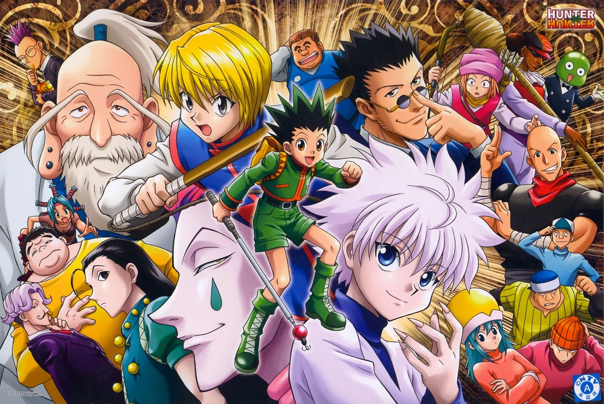
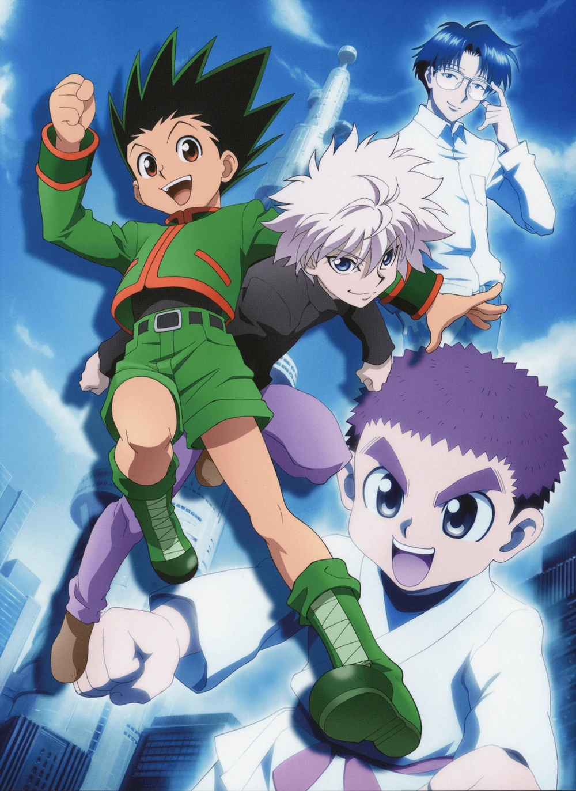
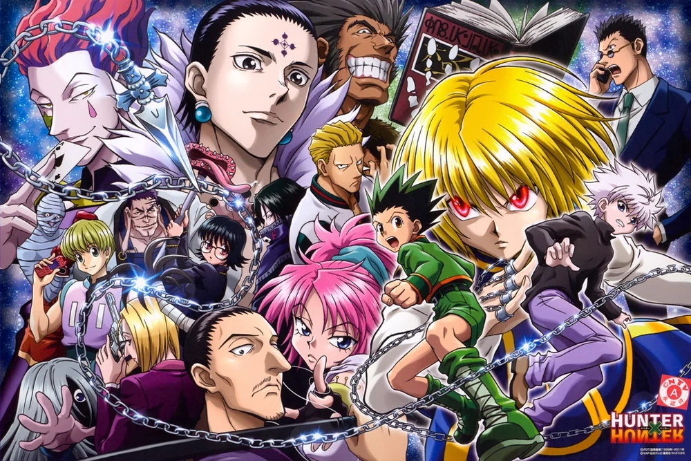
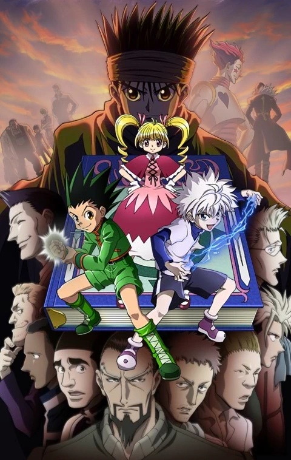
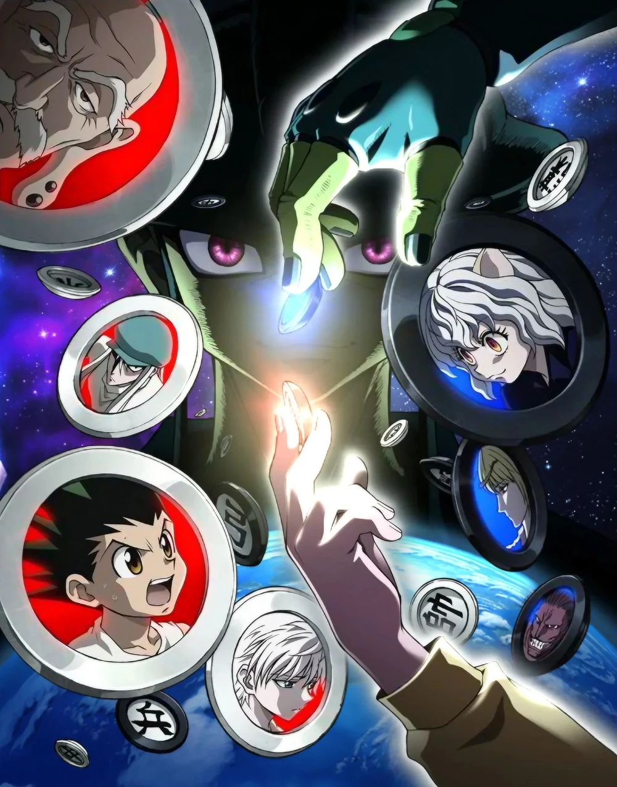
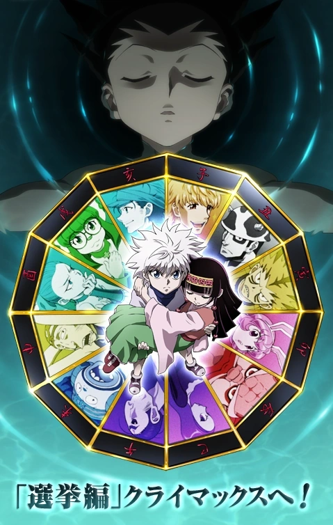
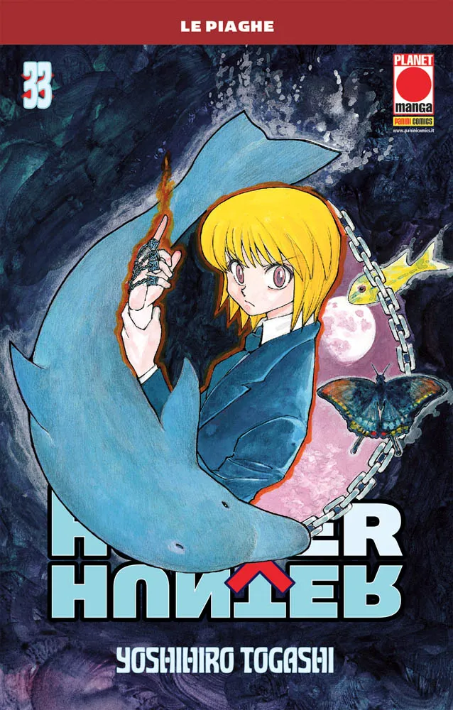

Personajes Principales
Gon Freecss
Es un niño de doce años que desea convertirse en un cazador para encontrar a su padre, el legendario cazador Ging Freecss. Al haber pasado mucho tiempo en el bosque mientras era más joven, se le da muy bien tratar con animales. Además, posee extraordinarios sentidos del olfato y vista.
Killua Zoldyck
Es un niño de doce años y mejor amigo del protagonista, Gon Freecss. Killua Zoldyck pertenece a una famosa familia de asesinos, la familia Zoldyck. Evitando tener el mismo futuro, decidió participar en el examen de cazador donde se nos muestra más adelante la gran amistad que forma con nuestro protagonista. Es muy ágil y fuerte en combate. Tiene una actitud bastante alegre y serena, en momentos de peligro suele ser frío y calculador.
Kurapika
Es el último miembro del clan Kurta, conocidos por sus ojos escarlata (緋色の眼 Hiiro no me). Su objetivo es perseguir y destruir al grupo responsable de la destrucción de su clan, el Gen'ei Ryodan.
Leorio Paladiknight
Es un adolescente que en un principio comenta estar participando en el examen de cazador exclusivamente por dinero, pero más tarde revela que es porque desea convertirse en un médico, y necesita el dinero para pagar sus estudios. Leorio es una persona muy inteligente, que está dispuesto a ayudar a sus amigos sin importar que suceda.
Personaje Favorito
Killua Zoldyck
Kana
Römaji
Debut
Manga
Anime
Voz
Japonés
Hispano
Perfil
Sexo
Edad
Cumpleaños
Altura
Peso
Tipo de Sangre
Ocupación
Familia
Familia
Nen
Tipo
Habilidades
Arcos de la Obra
| Imagen | Número de Arco | Título | Volúmenes | Adaptado |
|---|---|---|---|---|
|
 |
1 | Arco del examen de cazador | Volumen 1 al 5 | Sí |
|
 |
2 | Arco de la Arena de los Cielos | Volumen 6 al 7 | Sí |
|
 |
3 | Arco de Yorknew City | Volumen 8 al 13 | Sí |
|
 |
4 | Arco de Greed Island | Volumen 13 al 18 | Sí |
|
 |
5 | Arco de las Hormigas Quimera | Volumen 18 al 30 | Sí |
|
 |
6 | Arco de las Elecciones | Volumen 30 al 32 | Sí |
|
 |
7 | Arco de Sucesión al Trono | Volumen 32 en adelante | No |